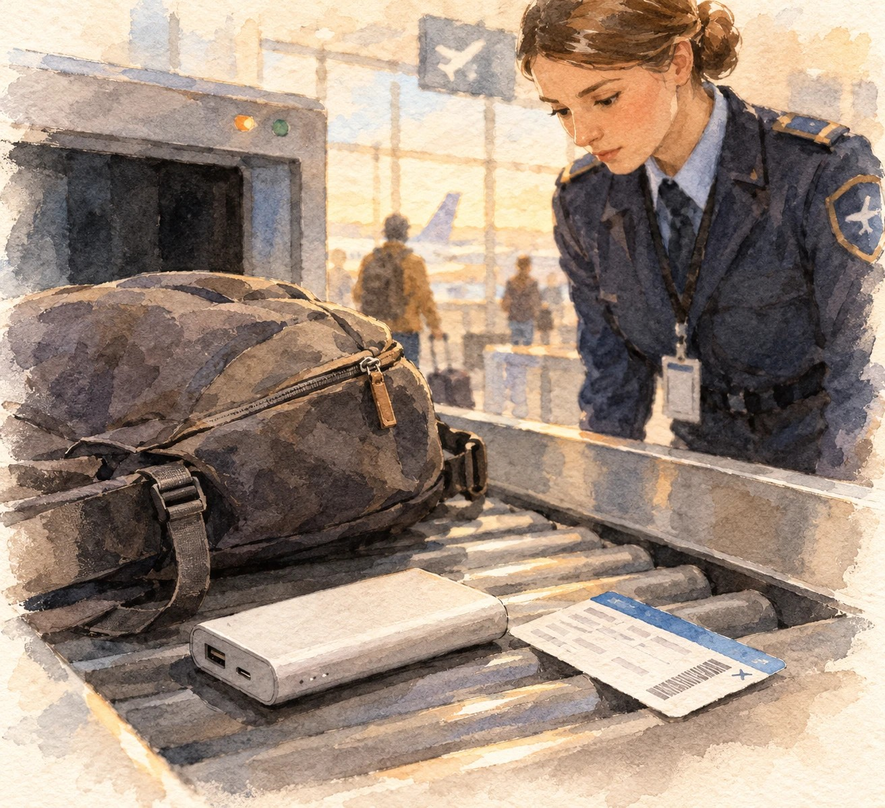
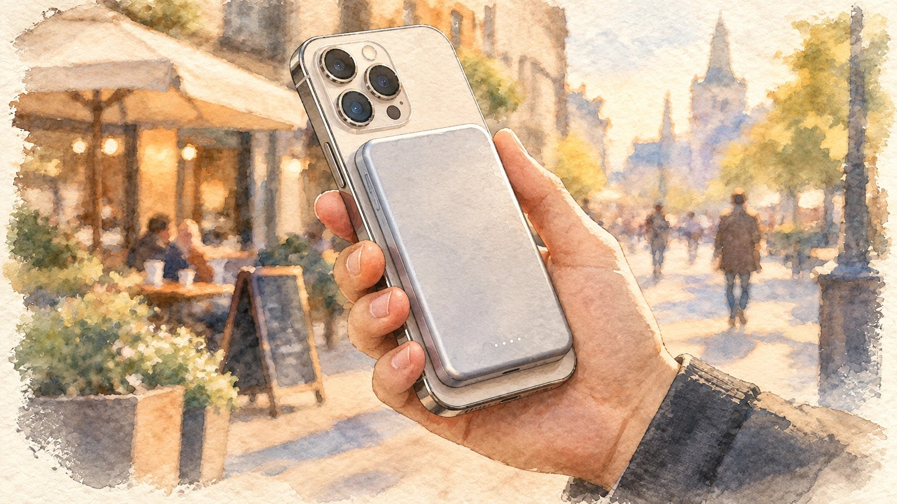
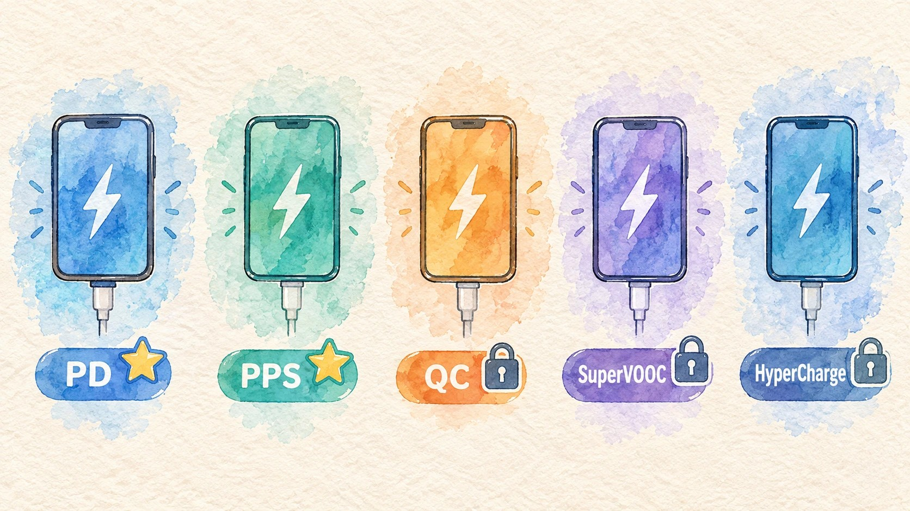
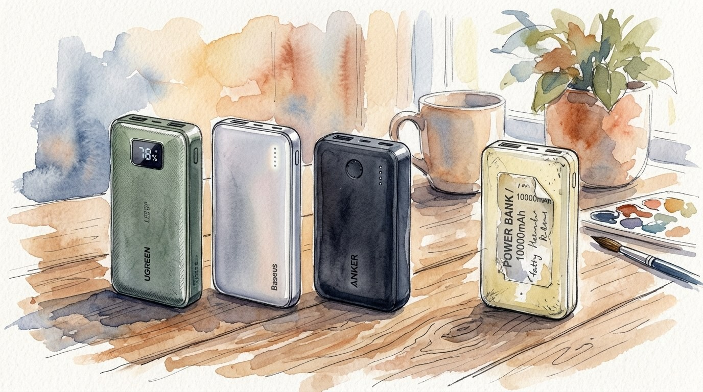

Казалось бы, что сложного в покупке внешнего аккумулятора? Зашёл на маркетплейс, выбрал «20 000 мА·ч за 1500 рублей» — и радуешься. Но на практике вас ждут сюрпризы: в аэропорту охрана отправляет батарею в мусорное ведро, новенький смартфон вместо обещанных 60 минут заряжается три часа, а сам пауэрбанк греется как утюг. Разбираемся без сложной физики, как выбрать пауэрбанк с умом, не остаться без связи в поездке и не выбросить деньги на ветер.
1. Боль путешественника: почему пауэрбанки отбирают в аэропортах
Самая частая и обидная ситуация: контроль безопасности на вылете, строгий взгляд сотрудника — и ваш аккумулятор летит в утиль. Особенно часто это происходит при пересадках через аэропорты Казахстана, Китая и Турции, где досмотр ручной клади к литиевым батареям особенно придирчив.

- Только ручная кладь. По правилам IATA литий-ионные аккумуляторы категорически запрещено сдавать в багаж — только брать с собой в салон.
- Главная цифра — ватт-часы (Wh), а не мА·ч. Почти все авиакомпании мира без согласования пропускают батареи ёмкостью до 100 Wh — это примерно 27 000 мА·ч при стандартном напряжении 3,7 В. Батареи на 100–160 Wh требуют согласования с авиакомпанией заранее, а свыше 160 Wh — запрещены к перевозке на пассажирских рейсах в принципе.
- Правило стёртой маркировки — главная ловушка. Если надписи на корпусе стёрлись от трения, ёмкость в Wh не читается или производитель вовсе забыл её напечатать, службу безопасности это не волнует: нет чёткой заводской маркировки — аккумулятор изымают и утилизируют на месте, никакие объяснения не помогают.
Совет: выбирайте модели проверенных брендов, где техническая гравировка выдавлена в пластике или нанесена стойкой лазерной краской, и никогда не заклеивайте её защитными плёнками или наклейками с логотипом — под ними как раз и прячется единственный читаемый номинал.
2. Айфоны и MagSafe: удобство беспроводных «магнитных» аккумуляторов
Для владельцев iPhone (начиная с линейки iPhone 12) и Android-смартфонов с магнитным кольцом (Magic Ring / MagSafe-совместимые чехлы) формат классического «кирпича с проводом» постепенно уходит в прошлое.

Компактные магнитные пауэрбанки на 5 000–10 000 мА·ч примагничиваются прямо к спинке смартфона и заряжают по стандартам Qi / Qi2. Провода не болтаются в кармане, а телефоном можно продолжать пользоваться одной рукой или снимать на ходу.
Важный нюанс: беспроводная зарядка даёт повышенный нагрев и ощутимые потери энергии — КПД около 60–70%. «Малыш» на 5 000 мА·ч фактически отдаст телефону около 3 000–3 300 мА·ч, то есть примерно одну полную зарядку. Для городского сценария на день этого более чем достаточно, но для суточной автономности в поездке магнитный формат не рассчитан — там нужен обычный проводной пауэрбанк ёмкостью побольше.
3. Зоопарк протоколов: почему «быстрая зарядка» работает не у всех
Надпись «Fast Charge» на коробке не гарантирует ровным счётом ничего. Чтобы смартфон заряжался быстро, протокол зарядки пауэрбанка должен совпадать с протоколом контроллера вашего смартфона.

- Power Delivery (USB-PD) и PPS. Универсальный золотой стандарт через разъём Type-C. Жизненно необходим для iPhone, Google Pixel, планшетов, игровых консолей и современных ноутбуков. Поддержка PPS (Programmable Power Supply) критически важна для флагманов Samsung — без неё не активируется режим Super Fast Charging.
- Quick Charge (QC). Классический протокол Qualcomm, поддерживается большинством недорогих Android-устройств через Type-A и Type-C.
- Фирменные закрытые протоколы: SuperVOOC / Dart / Warp у BBK-брендов (Realme, OnePlus, Oppo), HyperCharge у Xiaomi, SuperCharge у Huawei/Honor.
Если пауэрбанк умеет отдавать только стандартные 18–20 Вт по PD, смартфон с поддержкой 67–120 Вт будет заряжаться самой обычной медленной зарядкой на 10–18 Вт — фирменный протокол без своего же пауэрбанка попросту не включится.
4. Кабель решает всё: о чём забывают 90% покупателей
Купить пауэрбанк на 65 Вт и воткнуть в него старый тонкий кабель от ночника — классическая и очень частая ошибка.
- Обычные дешёвые шнурки физически не способны пропустить ток силой выше 2–3 А. Смартфон просто сбросит мощность до базовой ради пожарной безопасности контроллера.
- Для мощных пауэрбанков (от 30 до 100 Вт) нужен кабель с чипом E-Marker и явной маркировкой поддерживаемой мощности — например, 60W или 100W/240W. Всегда используйте комплектный кабель от пауэрбанка либо покупайте отдельно сертифицированные аксессуары того же производителя.
5. Бренды: фабричный Китай против безымянных поделок
Рынок завален дешёвыми ноунеймами, где на банке гордо написано «30 000 мА·ч», а внутри стоят дешёвые утяжелители и полудохлые элементы питания. Такие аккумуляторы быстро деградируют, греются и вздуваются.

В базовом сегменте есть недорогие рабочие лошадки вроде Hoco или Portobello — они годятся как аварийное бюджетное решение для дачи или бардачка, но чуда по скорости и честной ёмкости от них ждать не стоит.
Если нужен надёжный спутник в командировки, поездки и для дорогой электроники, стоит смотреть на фабричные бренды с честными контроллерами и защитой:
- Ugreen — честные контроллеры питания, поддержка PPS, экраны с индикацией ватт и корпуса, которые без проблем проходят досмотр в любых аэропортах.
- Baseus — лидер по магнитным беспроводным аккумуляторам (MagSafe) и тонким моделям на каждый день.
- Anker / Romoss — эталон долговечности ячеек и максимальной защищённости от перегрева и замыканий.
Ugreen — пауэрбанки с экраном индикации ватт, поддержкой PPS для Samsung и чёткой заводской маркировкой ёмкости, которая без проблем проходит любой досмотр в аэропорту.
Реклама. Ссылки ведут на поиск по маркетплейсу — подставьте партнёрские ссылки конкретных моделей перед публикацией.
Baseus — тонкие магнитные пауэрбанки для iPhone и Qi2-смартфонов на каждый день, без лишнего веса и проводов в кармане.
Реклама. Ссылка ведёт на поиск по маркетплейсу — подставьте партнёрскую ссылку конкретной модели перед публикацией.
Anker и Romoss — максимальная защищённость от перегрева и замыканий для тех, кто берёт пауэрбанк в командировки и не хочет менять его каждый год.
Реклама. Ссылка ведёт на поиск по маркетплейсу — подставьте партнёрскую ссылку конкретной модели перед публикацией.
Итоговый чек-лист перед покупкой
1. Летаете самолётами? Маркировка на корпусе должна читаться чётко, ёмкость — строго до 100 Wh без согласования с авиакомпанией.
2. Владельцам iPhone или Android с магнитным кольцом — берите компактный MagSafe-пауэрбанк на 5 000–10 000 мА·ч для городского сценария на день.
3. Для ноутбуков и консолей — ищите выходную мощность от 45–65 Вт и выше с поддержкой Power Delivery и, для Samsung, PPS.
4. Проверяйте кабель — без провода с чипом E-Marker и заявленной мощностью быстрой зарядки не будет, каким бы мощным ни был сам пауэрбанк.